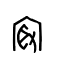
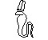
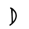

3.2
Understanding Pictograms of the PWD
As discussed in Chapter 1.4, the
Primitive Writing Definition (PWD) is the precursor to the Oracle Bone
Inscriptions (OBI). Hence, a comprehensive interpretation of each PWD pictogram
is crucial for understanding the OBI and its vocabulary. However, to understand
the PWD, the first step is to understand each distinct pictogram of the PWD.
Therefore, with the intercultural PWD-centered platform and optical illusion
and the Object-Oriented Analysis (OOA) tools, as discussed in the previous
section, the focus of this section is to analyze and interpret the original
meanings of 31 distinct pictograms of PWD in the Numeral Notations (NN), the
Heavenly Stems (HS), and the Earthly Branches (EB).
3.2.1. The
Numeral Notations (NN)
Historically, the
ten Numeral Notation (NN) characters have received limited scholarly attention
in China, largely due to their apparent simplicity and familiarity, which
seemed to offer minimal analytical value. The book of The Dao De
Jing
is perhaps the only resource in China that provides
a metaphysical and spiritual interpretation of the first three pictograms
within the NN system, interpreting the first three pictograms of the NN within
a framework of dichotomy and cosmological significance: The Tao gave birth to
one; one gave birth to two; two gave birth to three; and three gave birth to
all things. All things carry yin (darkness) and embrace yang
(light), and through the blending of these, harmony is achieved. Laozi does
not mention the fourth character, likely because by his time its form had
already evolved into a more complicated version, as seen in bamboo inscription
styles (see
hanziyuan.net/#).
Consequently, the
origins and underlying meanings of the Numeral Notations (NN) were not explored
in depth. In contrast, this research argues that the NN system contains
essential foundational elementsboth conceptual, symbolic, and religiousthat
underpin the Primitive Writing Definitions (PWD), Oracle Bone Inscriptions
(OBI), and, by extension, the broader framework of Chinese culture.
From the 1st to the 4th NN (Numeral
Notations):
This research
demonstrates, through comparative analysis of ancient numeral systems, the
profound similarity between Egyptian hieroglyphic and Chinese Oracle Bone
Inscription (OBI) writing. In particular, the first four OBI numerals are
identical to Egyptian hieroglyphics, not only in forms but also in the values
used for ten-based decimal counting. See the table below for a detailed
comparative analysis. (https://lingojam.com/GardinercodetoHieroglyphs
). The significant difference is that in Egypt, these hieroglyphs are only used
for dating, and a set of vertical strokes are used for object counting in
quantity. However, in OBI, these characters are used both for days and physical
objects. See the following table.
Table
3.1.1.1 Comparison
of Numeral Notation in Different Forms with OBI
|
Arabic Index
|
1
|
2
|
3
|
4
|
5
|
6
|
7
|
8
|
9
|
10
|
|
Chinese
OBI
|
|
|
|

|
|
|
|
|
|
|
|
Seal Inscription
|
|
|
|
|
|
|
|
|
|
|
|
Modern Chinese
|
|
|
|
|
|
|
|
|
|
|
|
Hieroglyph Dates
|
|
|
|
|
|
|
|
|
|
|
|
Gardiner Codesa
|
Z16
|
Z16a
|
Z16b
|
Z16c
|
Z16d
|
Z16e
|
Z16f
|
Z16g
|
Z16h
|
Z16i
|
|
Hieroglyph Numbers
|
|
|
|
|
|
|
|
|
|
|
|
Gardiner Codes
|
Z15
|
Z15a
|
Z15b
|
Z15c
|
Z15d or Z15i
|
Z15e
|
Z15f
|
Z15g
|
Z15h
|
V20
|
|
Babylonians
Cuneiform
|
|
|
|
|
|
|
|
|
|
|
|
Hebrew
|
|
|
|
|
|
|
|
|
|
|
|
Hebrew(Old)
|
|
|
|
|
|
|
|
|
|
|
aMichel Suignard, Preliminary
Draft for the Encoding of an Extended Egyptian Hieroglyphs Repertoire (The Unicode Consortium, 2016).
https://www.unicode.org/L2/L2016/16079-hieroglyphs.pdf; or
https://mjn.host.cs.st-andrews.ac.uk/egyptian/unicode/tablemeaning.html. pp.21-22. 13404-1230C for 1-9
in dates. p.20. 133AD 10 in dates.
The first four
characters of NN (Numeral Notations) are the simplest ones among all pictograms
in the OBI. They are self-intuitiveeasy to interpret, remember, read, and
write. No dictionary is necessary for them. Because of their intuitiveness and
simplicity, the rest of their associated characters can be easily recognized to
be the same set of numeral notations. Obviously, the first four characters not
only provide an entry point to study the OBI, but also play the role of the
foundation for the NN (Numeral Notations).
The selection of
horizontal strokes, as opposed to vertical strokes from Egyptian hieroglyphs,
indicates that the Numeral Notations (NN) were initially purposed for temporal
representation, specifically days. This design choice is supported by its
potential connection to the Genesis creation narrative and the theory that the
theory that Primitive Writing Definition (PWD) was designed for predictive
purposes.
The table reveals
that the first three numeral characters are still utilized in China today.
Developed in Egypt during the 3rd millennium BC and subsequently transmitted to
China by 1300 BC, these characters have survived for over 5,000 years,
positioning them as the most enduring symbols in the history of human script. Further
analytical investigation reveals that this longevity can be attributed to the
intelligent selection and adaptation of Egyptian hieroglyphs, their ambiguity,
cohesiveness, and their integration with the prophetic gospel.
The 5th NN (Numeral Notations):
Unlike the first
four characters of NN (Numeral Notations), which shows a direct copy of ideas
from the Hieroglyphs, the remaining characters from the 5th to the 10th in the
Numeral Notations (NN) show significant differences in forms. However, all of
them can still find similar matches or prototypes within the Egyptian
hieroglyphs lexicon, signifying the underlying connection between the two. The
significant disparities, however, imply that the adoption of Egyptian
hieroglyphs in China involved a process of re-invention or improvement, rather
than a mere copysupporting the stimulus diffusion theory. See the following
table.
Table 3.1.1.2 Comparison of PWD Numeral Notations
with Egyptian Hieroglyphs
|
NN
|
OBI
|
Samples of Similar
Forms in the Hieroglyphs
(with Gardiner
Codes)
|
|
NN-5
|
|
(related to EB-1:
)
|
|
NN-6
|

|
 O1 O1
 O21 O21A O21B O24
O26O161A
O168 O169 O169AX8
M44
O191A
J5
(0x14F28,HG-AA005E) a O21 O21A O21B O24
O26O161A
O168 O169 O169AX8
M44
O191A
J5
(0x14F28,HG-AA005E) a
|
|
NN-7
|
|
Z11B Z11 Z11A
Ankh
|
|
NN-8
|
|
Z25(0x14F06, Z25D) b
|
|
NN-9
|
|
 A4B A4B A13L A13L A14 A14 A3A A3A A4C A4C A318 A318 B13 B13
 I9 I9A I9B
I22I84
I86 I86E I89 I9 I9A I9B
I22I84
I86 I86E I89
I90
I99 I103 I107
|
|
NN-10
|
|
U107Y2vJ29 J28Z1
 A341 A341
|
Notes:
- a
https://www.unicode.org/L2/L2016/16079-hieroglyphs.pdf , p.115
- b libid. p. 88, 114.
|
In contrast to the
hieroglyphs composed of five horizontal strokes, the 5th Numeral Notation (NN)
presents two horizontal strokes bisected by an X-cross, which may represent an
abbreviated or substituted form of the three missing strokes. Although
significant discrepancies exist, they still demonstrate a potential connection
and partial similarity.
The 5th
NN stands out as the only numeral in the NN system without a direct
pictographic matching in the Egyptian hieroglyphic vocabulary. Although the
hieroglyph (Gardiner code HG-AA020A or S24) bears a partial resemblance, no
clear semantic link could have been established between them. This discrepancy
suggests that the 5th NN was likely an independent re-creation by the native
people, marking the earliest deviation from the Egyptian numeral system used
for datingno standalone horizontal strokes are used to represent the numbers
after the 5th NN.
The 6th NN (Numeral Notations) for House:
Compared with the
corresponding hieroglyph, the 6th NN (Numeral Notation) does not
have any standalone horizontal strokesignificantly different from the
hieroglyphic numeral notations. However, the optical illusion shows that the 6th
Numeral Notation (NN) is similar to a front view of a house, which can match
many characters within the hieroglyphs vocabulary, such as O1 and O21A. In
addition, the 6th Numeral Notation (NN) has lots of variations, all
of which can be found matched in the hieroglyph vocabulary. (See table above).
In addition, the 6th
NN (Numeral Notation) functions as a root character, contributing to numeral
compound pictograms, which can directly match hieroglyphs. The numeral matches,
along with the optical illusion of a house, can prove that the 6th
NN carries the meaning of house while presenting a value of six. See
following.
Moreover, the next
section will show that the number six and the house contain a relationship
within the context of the Genesis creation narrative, which further proves that
the 6th NN conveys a meaning of house.
HouseUsage
|
#
|
OBI
|
Hieroglyphs
|
|
1
|

|
O175 O175A O175B
|
|
2
|

|
O177 O286O266
|
|
3
|
|
O298 O264
|
|
4
|
|
O148
|
|
5
|
|
O318
|
|
6
|
|
O295
|
|
7
|
|
O255O339O320
|
|
8
|
|
O62O54
|
|
9
|
|
O267O57O173
|
|
10
|
|
O278O319
|
|
11
|
|
O270
|
|
12
|
|
 O263 O263
|
|
13
|
|
O256O254O348 O340 O340
|
|
14
|
|
O251O74
|
|
15
|
|
O343O170J23M
|
|
16
|
|
O269
|
|
17
|
|
O188
|
O175 O175A O175B
O177 O286
O266
O298 O264
O318
O295
O255O339O320
O62O54
O267O57O173
O278O319
O270
O263
O256O254O348O340
O251O74
O343O170J23M
O269
O188
The 7th NN (Numeral Notations)
The use of the cross symbol to
represent the 7th decimal Numeral Notation (NN), is very difficult to
understand at first. Unlike its corresponding hieroglyph, which has seven
horizontal strokes, conveying the number seven, from a mathematical
perspective, the 7th NN could not find any sign cues to seven. In
addition, the 6th NN has no pictorial relationship in optical
illusions with its neighbor characters, such as the 6th or 8th
NN. Using cross to represent seven is inefficient in remembrance.
Additionally, the cross symbol is
also used to represent the 1st Heavenly Stem (HS). Within the context of the
PWD or entire OBI, using an identical symbol for two different meanings would
create confusion in reading and increase the likelihood of errors in counting.
Moreover, archaeological evidence
reveals that the cross symbol has numeral variation and is a globally universal
symbol with deep religious significance across various cultures and time
periods. From ancient Mesopotamian artifacts to pre-Columbian American
civilizations, the cross has been used in religious, spiritual, and
cosmological contexts. For example, in ancient Egypt, the ankh represented life
and immortality, while in pre-Christian Europe, the solar cross symbolized
cosmic order. In Mesoamerican cultures, cross-like symbols appeared in
depictions of the sacred tree of life, expressing divinity, protection, and the
connection between the earthly and the spiritual realms. The widespread
presence of the cross across different civilizations makes the 7th NN more
complicated in interpretation.
Chinese etymology shows that the 7th
NN was changed during the Bronze Inscription period. The cross symbol, however,
was moved to replace the 10th NN. This is the most significant
change in the OBI writing system, reflecting the trouble issues among
practitioners of using and understanding the association between the cross and
seven in Anyang.
However, this investigation shows
that the use of the cross symbol to represent the 7th decimal Numeral
Notation (NN) is not a mistake in design but has a rich religious purpose and
meaning. It will be discussed in next section.
The 8th NN (Numeral Notations)
Structural analysis shows that the
8th NN functions a root, contributing to about 50 compound
characters. One of them was find in the Chinese etymology, linking to modern
character (fen), denoting
dividing, separating. (https://www.zdic.net/hans/). Chinese tradition interprets the
pictogram in the lower middle of the 8th NN as a knife, which
could not find cohesive meaning in the context of PWD, neither it can find
consistent to other compound pictogram with different elements, such as hand,
bird, sacrificed animal, and so on. This research suggests it refers to
man, which can be find more consistency within the PWD.
The 8th NN is similar to
hieroglyph Z25 and Z25D, which seem to mean the merge, opposite to
dividing. Regardless separation or merge, they can be considered related, though
their connection is weak.
The 9th and 10th NN (Numeral
Notations):
This research suggests that the 9th
NN is derived from the snake in hieroglyphics. The 10th NN is an
abstraction of all tall narrow signs in the hieroglyphics. The 9th
and 10th are placed together, paralleling to the close association
between the snake and tall narrow signs in the hieroglyphs. See in the table.
The 9th Numeral Notation (NN)
displays a range of variations, attributable to optical illusion, which bear
resemblance to stylized snakes, notably those with two auricles or the
Deshret-crowned depiction (
representing the Red Crown of Lower Egypt) in hieroglyphs. Furthermore,
the 9th NN can be interpreted as a snake being decapitated by a blade.
x9-10
|
Items
|
OBI
|
Hieroglyphics
|
|
|
|
|
Notes:
-
Tall Narrow Signs of Hieroglyphs:
https://www.egyptianhieroglyphs.net/gardiners-sign-list/
|
Figure 3.2.4
Comparison
of OBI and Hieroglyph
between the 9th and 10th NN
The 10th pictogram, a
vertical stroke, can be viewed as a degree of abstraction from all tall narrow
hieroglyphic signs, including Egyptian Was, Crook, or Shepherds Staff,
symbolizing the magic power.
Certain hieroglyphic depictions,
such as A23F and A23H, illustrate a figure holding a vertical stuff or stick.
Person-holding-stuff pattern in hieroglyphs is similar to those pattern found
in Mesopotamian victory war artworks, signifying the end of conflict.
This research identifies over three
dozen hieroglyphs composed of a snake and a tall, narrow object, frequently
found in the Book of the Dead (BoD). Given the interchangeability of snakes and
persons in some Egyptian artworks, this study posits that the snake and tall,
narrow object pattern parallels the person-holding-object pattern, highlighting
the snake's decisive role. This viewpoint offers a clue why the 9th
and 10th NN were designed and arranged in this way in Anyang.
Compared to the 1st Numeral
Notation (NN), if the horizontal line symbolizes a demarcation between heaven
and earth, the vertical stroke of the 10th NN can represent their
cross-connection or transgression. This connection may be interpreted as the
end of the world, human existence, or a diurnal cycle, depending on religious
context and worldview. Therefore, within the numeral context of the NN, the
10th NN plausibly denotes the termination of a decimal sequence.
Furthermore, this theory offers an
explanation for the substitution of the 10th Numeral Notation (NN) with the
cross sign during the Bronze Inscriptions era, a most significant change that
has been maintained to this day.
snake tall-narrow sign pattern
| 1 |
OBI: rod-snake and rod-man patterns
 (1) (1)
 (2) (2)
 (3) (3)
 (4) (4)
 (5) (5)  (6) (6)  (7) (7)  (8) (8)
|
| 2 |
Hieroglyphs: rod-man pattern
 C65A C65A
 C19C C19C
 B49 B49 A491 A491 A345 A345
 A19 A19
|
| 3 |
Hieroglyphs: snake-man mutual symbolic
 I32A I32A
 I33 I33
 A396 A396 A403 A403
|
| 4 |
Hieroglyphs: snake tall-narrow sign pattern
Z21, W108V75 U70 U76U84, U87
U35A U35 T5,
T42
T119
T119A
T127
S169 U35 T5,
T42
T119
T119A
T127
S169  S162S145 S145A S147
S30
S30A
R75
R18A
P82 S162S145 S145A S147
S30
S30A
R75
R18A
P82
 P9
O261
O261A P9
O261
O261A
 O246
M128
J45
J46
J59I119
I100
I102
F136
O288
(U+131AF)
(U+131C6)
(U+12340) O246
M128
J45
J46
J59I119
I100
I102
F136
O288
(U+131AF)
(U+131C6)
(U+12340) Z39 Z39
|
Dyad and Tetrad
in Sexagenary Sequence (SS)
SS
Component
Index
|
1
(the 1st SS)
|
2
(the 2nd SS)
|
| A HS Dyad
|
(the 1st HS)
|

(the 2nd HS)
|
| A EB Dyad
|

(the 1st EB)
|
(the 2nd EB)
|
Heavenly Stems
(HS)
The following table shows that all
pictograms in the Heavenly Stems (HS) can find their visual pictorial
prototypes from the hieroglyphics in the BoD. Although symbolic meanings cannot
fully match each other, the actual pictures in hieroglyphics provide significant
insight into understanding the abstracted optical illusive pictograms.
|
HS-1
|
HS-2
|
HS-3
|
HS-4
|
HS-5
|
HS-6
|
HS-7
|
HS-8
|
HS-9
|
HS-10
|
|
|
|
|
|
|
|
|
|
|
|
|
Z11
Q7
Q7H
Q7E
|
I80
I9C
I123
|
N1

T94
J21A
|

N5
Y24
O49A
|
T7A
R8
R9
|
F48
F49

O5
I114
O310
O311
|
F1A
F31
O22A
|
V39,
V39A
V49A
V49
S34
S34A
M11B
|
O212
|
O49
Z9

Z10
|
|
Figure 3.2.5
Comparison of Heavenly Stems and Hieroglyph
The 1st and the 2nd Heavenly Stems
(HS): (Jia) and (yi)
Based on the optical illusion, this
research suggests that the 1st and 2nd HS came from or is
inspired by the repeated cross-snake pattern in Egyptian culture. The Book of
Dead (BoD) contains the recurrent cross and snake motif in various places. The
following is a sample with a recursively repeated cross-snake-leather pattern
five times on each side of the cross-shape person on the knees. The leather can
be interpreted as spirit or ghost in symbolism. As discussed in Chapter 2, Egyptian
culture is characterized by a rich tradition of prophetic symbolism. The
cross-snake motif in the BoD is likely part of the broader prophetic symbolism
within Egyptian culture. This speculation is consistent with the purpose of the
BoD, which is to achieve a successful afterlife through the power of a
prophesized son, who is interpreted as the coming Jesus in this research.
Figure 3.2.6. Sample of the BoD.
From: https://i0.wp.com/egypt-museum.com/wp-content/uploads/2023/11/Weighing-of-the-Heart-Ceremony-Book-of-the-Dead-of-Taysnakht.jpg
Not only are the cross and snake
frequently used together in the BoD, but they are also integrated together to
formulate various hieroglyphs, as demonstrated by the following examples in
Gardiner's Hieroglyph list. Similar combination can also be found in the OBI,
highlighting the connection between the two.
Hieroglyph:
:
|
OBI
|
Hieroglyph
|
|
|
Z13
N6A
 N51A N51A
|
From a biblical perspective, the
cross-snake motif may evoke the story of Moses bronze serpent on a pole (Num
21:89). However, Egyptian hieroglyphs and the Book of the Dead (BoD) predate
Moses time, approximately around the 15th century BC. Nevertheless, from a
prophetic standpoint, this Old Testament account is often interpreted as a
foreshadowing of Jesus' crucifixion. Given that Egyptian culture also exhibits
prophetic motifssuch as the mother-son pattern discussed in Chapter 2it is
plausible that the Egyptian cross-snake motif aligns with prefiguring Christ on
the cross.
Additionally, the cross pictogram
used alongside the cross-snake pattern in the HS is identical to the 7th NN
pictogram, which may hold prophetic significance. The connection between the
cross-snake motif and the 7th NN further underscores the prophetic importance
of the 1st HS pictogram, reinforcing the prophetic nature of the cross symbol
within the context of the PWD. Absent a prophetic interpretation, the
cross-snake motif holds little discernible significance within both the OBI and
Egyptian culture or religion.
Chinese etymology shows that the 1st
HS gradually was changed to become like a turtle over the history and finalized
to the form of the modern character
(jia), with meaning of armor, shell; fingernails. Its original meaning is unknown.
Shuowen Jiezi () states that its seal form is like a
human head, which is not widely adopted in Chinese literature.
The character (jia) was eventually
incorporated into the Chinese term for Oracle Bone Inscriptions (OBI), (Jia-gu-wen),
which literally means "turtle-bone inscription." In this case, the
connection between the character
(jia) and turtle is because of the turtles shell. Indeed, this connection is
also profoundly reasonable in the OBI. With the optical illusion, a linked list
can be established between the 1st HS and turtle pictogram in the
OBI, even though the 1st HS and turtle pictogram looks significantly
different. See the following.
This optical illusive linked list
suggest that the 1st HS not only is related to turtle in pictorial
forms but also carry the religious symbolic meanings of the turtle. This
underlying subtle meaning of the 1st HS likely influenced the modification of
the cross into the modern character
(ji), as demonstrated in Chinese etymology. In addition, the linked list
supports the speculation that the OBI may have been likely inspired by the
turtle symbolism, which was transmitted from the Egyptian turtle and scarab
symbolism. Further analysis show that the turtle pictogram is also related to
the 1st EB. Through the turtle pictogram, the 1st HS and 1st
EB are related symbolically. See the 1st EB.
With this underlying subtle
meaning, the cross-snake pattern evolved into the turtle-snake pattern. This
turtle-snake imagery is also present in various pictograms and hieroglyphs,
reinforcing the symbolic connection between the turtle and the cross symbol.
See the following examples.
OBI:
 I85
I85
|
OBI
|
Hieroglyph
|
|
|
I85
|
The modern character for the 2nd
HS is (yi). Its original literal
meaning is unknown. It is traditionally defined in the Shuowen Jiezi () as "like a plant growing in a curving
manner" (). This
interpretation can be supported by the optical illusion, but not widely
accepted in Chinese literature since it is established based on agricultural or
botanical observation outside of the context of the HS, this interpretation
lacks cultural, historical, and religious support and is seldom used.
Throughout history, the character has been predominantly interpreted and used
to denote "secondary" or "less important."
While Chinese historical documents
offer limited contextual clues for interpreting
(yi), the usage of the 2nd Heavenly Stem (HS) within Oracle Bone
Inscriptions (OBI) provides substantial evidence of parallels with Egyptian
culture, particularly in hieroglyphs and tomb paintings, showing that the 2nd
HS represents the snake. The following figure shows some samples.
xyz
--------2nd_p_h----
|
#
|
Samples of
Unresolved Pictograms
|
Samples of
Hieroglyphs
|
| 1
|
|
I61
I63
 I62
I66 I62
I66
|
| 2
|
|
I45
I97
|
| 3
|

|
I33I32
 I32A I32A
|
| 4
|
|
I40F
A40
A40A
|
| 5
|
|
I117
I126
I24
I25
|
Figure 3.2.7
Comparison of OBI and Hieroglyph for the 2nd HS
The 3rd HS (Heavenly Stems ): (bing)
Based on Chinese etymological
analysis, the modern character for the third Heavenly Stem (HS) is (bing). The etymological origin and
semantic meaning of (bing)
remain indeterminate, as no consensus has been established. The Shuowen
Jiezi () offers an ambiguous description,
associating the character with air and gate, and its historical usage has been
limited. Beyond its role in the sexagenary cycle, the character is seldom
employed.
With the optical illusion, the 3rd
HS resembles Egyptian hieroglyph N1. Particully, in the Gardiner list, the
AA21E and J21A possess similar usages found in OBI pictograms as following:
|
#
|
Pictograms
|
Samples of
Hieroglyphs
|
| 1
|
|
|
Notes:
-
https://www.unicode.org/L2/L2016/16079-hieroglyphs.pdf, p115.
|
3rd_p_h_1
|
#
|
Samples of
Unresolved Pictograms
|
Samples of
Hieroglyphs
|
| 1
|
|
(14F35)
a
J21A N49 N49 O55 O55
(14F34)a
(14F36)a
|
Notes:
-
https://www.unicode.org/L2/L2016/16079-hieroglyphs.pdf, p115.
|
Hieroglyph:
(14F35,
HG-AA021E) a
J21A
(14F34,
HG-021D)b
(14F36,
HG-AA021F)[iii]
The Egyptian hieroglyph N1
represent sky. Its religious meaning is not very clear, the Chinese uses are
also limited in OBI, its meaning needs further explore.
The 4th HS (Heavenly Stems): (ding)
Based on Chinese etymological
analysis, the modern character for the 4th Heavenly Stem (HS) is (ding). The etymological origin and
semantic meaning of (bing)
remain indeterminate. The Shuowen Jiezi ()
state the it resemble human heart, but is not widely accepted. Besides its
meaning of the sequential 4th position in HS, it also denotes male
adult; robust, vigorous in Chinese literature. It is also used for family name.
In Egypt hieroglyphs, a circle can
represent the sun and is worshipped as following example. A circle can also
represent the moon as followings hieroglyphs. The identical idea of
hieroglyphic expression for sun and moon can also be found in the Chinese
OBI with modification in form and style. The OBI pictogram for modern character
(ri), conveying sun and day is
almost the same as the Egyptian hieroglyph of Gardiner code N5. Similarly, the
OBI pictogram for modern character
(yue), denoting moon and month is also similar to the Egyptian hieroglyphs
of Gardiner code N12. The difference between them lies in the directions as
seen in the figure. This connection provide another evidence for stimulus
diffusion in writing between the two different cultures.
N55
| # |
Char |
OBI |
Hieroglyphs |
| 1 |
(ri)
Sun
|
|
N5. N8 N55 N8D N8A |
| 2 |
(yue)
Moon
|

|
N9 N9A N10 N10A N11 N12
|
| 3 |
|
|
N6 N6C N142 N122 N110 N51A N52 N54 |
The 4th Heavenly Stem
(HS) appears in two distinct graphical forms: a circular form and a square
form, the latter being the more frequent. Analysis of optical illusions and
usage patterns within the OBI vocabulary suggests that, irrespective of the form,
the 4th HS embodies the semantic concept of "nail." The
metal nail is not in the Gardiner hieroglyph list, though it existed in Egypt
culture as early as the bronze times. The head of a nail is usually in the form
of a circle or square. Using the 4th HS to represent the nail in OBI
writing is an indigenous invention during the stimulus diffusion process.
In addition, while the Egyptian
hieroglyph N5 was adopted in the OBI, its association with the snake is not
highlighted in the OBI. The number and forms of its association with snakes are
limited in the OBI. See the following samples in comparison. No usage pattern
shows that it was used with a snake for a person, deity, or sun worship as
shown in Egypt.
|
#
|
Pictograms
|
Samples of
Hieroglyphs
|
| 1
|
|
N6
N6C
N142
N122
N110
N51A
N52
N54
|
OBI:
Hieroglyphs:
N6
N6C
N142
N122
N110
N51A
N52
N54
Instead of the snake-sun pattern
found in Egypt, the OBI usage shows a nail-person patternthe 4th
HS is found often associating with a person pictogram. The OBI human characters
analysis reveals that the OBI depicts only 5 basic types of person: a man, a king,
a servant (or prayer or priest), a son, and a woman. See the following. As the
radical (root) pictograms, all of these five persons are found attached with a
square symbol of the 4th HS, formulating new pictograms that were
not passed down to todays writing. See the following figure. The nail-person
pattern in the OBI indicates that during the stimulus diffusion process, the Egyptian
religious doctrine was slightly changed, shifting the focus from the snake to
persons.
|
|
Man
|
Servant
|
King
|
Son
|
Woman
|
|
Basic Types of Person
|
|
|
|
|
|
|
Nail Pattern
|
|
|
|
|
|
Figure
3.2. The Nail-Person Pattern in the OBI.
The importance of the nail in the
gospel's crucifixion story is undeniable. Considering the existence of
prophetic motifs in Egyptian culture, exemplified by the mother-son pattern
detailed in Chapter 2, it is plausible to argue that the 4th HS
pictogram was intentionally designed to integrate Egyptian prophetic elements
while simultaneously rejecting idolatry and sun-worship, suggesting a selective
adoption of Egyptian religious ideas during the stimulus diffusion process. Supporting
this hypothesis, the archaeological finds from Anyang, where artworks rarely
depict realistic human faces whereas human sacrifices were prevalent, in stark
contrast to contemporaneous Egyptian culture with its abundance of human
figures, show no firm evidence of idolatry or sun-worship.
Moreover, the interpretation of
"nail" significantly enriches the symbolism of the 6th Earthly
Branch (EB). While, through optical illusion, it suggests (a) a son with a
large head and outstretched arms, (b) a person with a head tag, (c) a
cross-shaped wood frame with a tag, and so on, with the meaning of nail, it
also alludes to crucifixion along with the son. This significantly enriches
the connotation of the 6th EB, making it closer to the concept of
gospel son.
Furthermore, with the replacement
principle, as discussed in the mother-son pattern, the pictograms with the nail-person
pattern suggest that man, king, servant, and son refer to an identical
person with different features in the OBIits purpose is to enrich the
connotation of the son presented by the 6th EB.
This research finds that the 6th
EB contributes the modern characters (kou,
mouth),(yue, speaking), (she, tongue), and (chi, tooth). With insights
from Chinese etymology, two optical illusive linked lists can be drawn from the
6th EB in the OBI as the following. Notably, while
(yu, an archaic term for
"saying") and (r,
meaning "day" or "sun") appear visually similar in writing,
they have distinct origins in OBI pictograms. The character
(r) is derived from the
Egyptian sun of hieroglyph N5, whereas the character (yu) is derived from the OBI pictogram for the
modern character mouth (kou).
This is a case showing how development diverges after stimulus diffusion.
Chinese etymology studies reveal
that the square symbol for the 6th Earthly Branch (EB) in Oracle Bone
Inscriptions (OBI) and the modern character
(ku, meaning "mouth") have no direct semantic relationship,
despite their visual similarity. Likewise for the Through known pictograms and
illusive linked lists, it is evident that the 6th EB can not only represent the
concept of a nail but also convey meanings related to mouth and speaking.
When being nailed implies immutability or fixation, the sense of speaking
in OBI can mainly refer to unchangeable or eternal words, carrying a strong
religious significance. This design deepens the connotation of the 6th EB,
further enriching its cultural and spiritual implications of the OBI.
This speculation can be tested
against Chinese classical texts predating the Qin Dynasty (221207 BC), where
the phrase (z yu,
meaning the Son said or the Sons saying) appears with exceptionally high frequency,
particularly in the Lun Yu (,
Analects) from the Warring States period (480350 BC). According to
research from The Contextualization Potential of the Concept of
"Son" in Pre-China Documents: A Missiological Inter-Cultural Study
(Ding, 2020) at CIU, the phrase
serves a dual function: first, to reinforce the authority of Confucius
(Kongzis) words, and second, to position Kongzi as the prophesied son
(, z) within its
cultural context (Ding, 2020). The phrase
(z yu) was not an innovation of the Warring States period but rather
a more liberal and literal expression rooted in its original devotional use in
Oracle Bone Inscriptions (OBI) religion.
The connection to the gospel in
ancient China is numerous. Dao De Jing (Lao zi, ~500 BC) from Daoism is another
famous example. Welch (1966) stated that No other book except the Bible has
been translated into English as often as Lao Tzus A more significant reason
for so many Western versions lies perhaps in the parallels between the Tao Te
Ching and the New Testament. (Welch 1966, pp. 4-5).
The connection to the gospel
revealed through the 4th Heavenly Stem (HS) in PWD suggests that the
central prophetic ideas, which originated in Egyptian culture and later
flourished in Anyang, never truly disappeared from China, even after the sudden
disappearance of Oracle Bone Inscriptions (OBI) from historical records. Daoism
and Confucianism, the foundations of Chinese culture, are not entirely new but
rather the historical, philosophical, and literary reforms of these central
prophetic ideas rooted in the OBI and its religious traditions. After the Multiple-Son-Hundred-Family
ended in the Qin Dynasty (221-207 BC), these philosophical frameworks and
worldviews were transformed into the practice of societies and authoritarian
states, profoundly embedding themselves into individual, personal, and social
life.
The prophetic connection to the
Gospel in the Oracle Bone Inscriptions (OBI) appears more centralized and purer
than in Egyptian culture, with even greater detail and accuracy than in the Old
Testament. The 4th Heavenly Stem (HS), symbolizing nails, along with the 6th
Heavenly Stem (HS), which represents crucifixion, serve as striking examples.
In the Old Testament, the nail was not explicitly used for prophecy. This
prophetic connection across cultures poses a significant challenge for
missiological scholars and missionaries in contextualization, as it risks
leading people to mistakenly view these elements as direct precursors to the
Gospel. Scholar Welch (1966) cautiously stated that:
The prophetic connection to the
gospel in the Oracle Bone Inscriptions (OBI) appears more centralized and purer
than in Egyptian culture and even more detailed and accurate than in the Old
Testament. The 4th Heavenly Stem (HS), representing nails, along with the 6th
Heavenly Stem (HS) and the 8th Earthly Branch (EB), which depict crucifixion
and resurrection, serve as striking examples. This prophetic connection across
cultures presents a significant challenge for missiological scholars and
missionaries in contextualization, as it risks misleading people into
perceiving these elements as direct precursors to the gospel. Scholar Welch (1966)
cautiously stated that:
It
is not hard to understand the readiness of early scholars to assert that the
doctrine of the Trinity was revealed in the Tao Te Ching and that its
fourteenth chapter contains the syllables of the Yahveh. Even today, though
these errors have been recognized for more than a century, the general notion
that Lao Tzu was Christs forerunner has lost none of its romantic appeal. It
is a false notion, as we shall see. Though it is true that in certain
situations the two teachings would recommend to a man the same course of
actions, they would do so on different ground. (Welch 1966, p. 7).
The 5th HS (Heavenly Stems):
(wu)
The 5th HS and 11th
Earthly Branches (EB) both are similar in pictorial pictograms of the OBI. Both
modern characters (wu) and (xu) are also similar in writing and meanings, representing
ancient weapons. Shuowen cannot help for better understanding of religious
meanings of these two words.
The unearthed bonze weapons from
Anyang indicates that the weapons are more art for religious decoration than
practical for the military tools. Weapons can help enhance the authority in
religious ritual. It also could represent the murdering or human sacrifice.
The 6th HS (Heavenly Stems): (ji)
The modern character for 6th
HS is (ji), meaning self. Shouwen
explains that it resembles to the human belly body. But in the OBI, this
pictogram is similar to 9th Earthly Branches (EB), related to god,
or deity. See the discussion in the 1st EB (Earthly Branches).
While this pictogram can find
similar Egyptian hieroglyphs like F48, F49, O5, I114, and so on, it is also
similar to the motif of taotie commonly found on ancient Chinese ritual artistic
bronze vessels, suggesting wide application in artwork at Anyang.
The modern character for 6th
HS is (ji), which is similar to the
character (s) in writing, but is
unknown in meaning except for the usage of the clock. However, according to the
Chinese etymology, (s) came
from the 6th Earthly Branches (EB), representing the son. This
case indicates that similarity in modern characters does not help to understand
their original OBI pictograms.
The 7th HS (Heavenly Stems): (gng)
The modern character for the 7th
Heavenly Stem (HS), (gng),
lacks a precise meaning. The description from Shuowen Jiezi and
historical documents does not help.
From an optical illusion
perspective, the 7th Heavenly Stem (HS) resembles the rear view of a sheep or
goat, with its two horns representing the head and a tail extending behind. Partially
similar images can be found in the hieroglyph Gardiner list.
This interpretation aligns with the
prophetic themes embedded within the Heavenly Stems (HS) and Earthly Branches
(EB), as the sheep is symbolically connected to the Lamb of God in the Gospel.
Notably, this pictogram appears twice in Oracle Bone Inscriptions (OBI)
alongside the pictogram for king, reinforcing this theory. Additionally, its
association with the 2nd Earthly Branch (EB) suggests it is raised for
glorification, further supporting this interpretation.
|
OBI
|
Hieroglyph
|

|
(not found yet)
|
The 8th HS (Heavenly Stems ): (xn)
The modern character for the 8th
Heavenly Stem (HS), (xn),
carries meanings such as "bitter," "toilsome," and
"laborious." Shuowen Jiezi describes it in relation to
"weeping" and "crying," which aligns with its commonly used
modern meanings. However, there is no widely accepted explanation for the
origin of this meaning, particularly from the optical illusion perspective.
Based on the optical illusion, this
research proposes that the 8th Heavenly Stem (HS) is a variation of the 6th
Earthly Branch (EB) and carries the meaning of the 1st EB as son,
specifically defining it as an arising son with a dynamic optical illusion
analysis (see the discussion on the 1st EB). From this perspective, the 8th HS
should be associated with emotions such as joyfulness, victory, or
jubilation. While its traditionally understood meanings are negative and
seemingly opposite to these feelings, they do not entirely contradict the
prophetic tones but may instead complement them.
Static and Dynamic Son
While both the 6th EB
(Earthly Branches) and the 8th HS (Heavenly Stems), related to the 1st
EB, convey the meaning of son through the image of head, arms, and body, a
question may be raised: how do they differ? Why are they similar?
A further analysis through optical
illusion illustrates that they represent different statuses for the identical
person. While the 6th EB represents a static person with open arms
waiting for someone to embrace, the 8th HS is a dynamic person
rising upward with raised arms. The dynamic status is particularly prominent in
the Bronze Inscriptions (BI) showing a person dancing, flying, floating, or
rising in the sky. See the following figure.
|
Names
|
Static
|
Dynamic
|
|
OBI PWD
|
(The 6th
EB)
|
 (The 8th
HS) (The 8th
HS)
|
|
OBI Usage Samples
|
|
|
|
Bronze Inscriptions
(https://hanziyuan.net/#)
|
|
|
|
Egyptian
Hieroglyphic Signs
|
Ankh (S34)
|
Tyet
(V39)
V39A
|
Figure 3.2.10.
Statis and Dynamic Optical Illusions for Son
It is intriguing that Egyptian
symbols exhibit a similar distinction between the Ankh and the Tyet. A
significant difference lies in the Tyet, which could represent the dynamic
arising with arms lowered rather than raised (see figure above). The lowered arms
could be interpreted as a passive arison, whereas the raised arms can represent
the active way to go up. While the phonetic factor is more decisive than the
optical illusion in the Hieroglyphs, such an interpretation may confront the
critics lacking the evidence. Nevertheless, with numerous similarities and
different perspectives, the connection between the OBI and Hieroglyphics cannot
be simply considered a coincidence. The Ankh and Tyet predate OBI and are
frequently found in the Book of the Dead (BoD) and tomb paintings, suggesting a
possible influence on the development of the 6th Heavenly Stem (HS) and the 8th
Earthly Branch (EB) during their creation. While this connection provides a
deeper understanding of the meanings behind the 6th HS and 8th EB, it also
underscores the broader link between the Book of the Dead and the Primitive
Writing Definition (PWD).
The 9th HS (Heavenly Stems): (ren)
According to the Chinese etymology,
the modern character for the 9th Heavenly Stem (HS) is (ren), its meaning is not clear. However, the 9th
HS pictogram in OBI is more similar to the modern character
(gong), explicitly meaning labor,
work; worker, laborer. According to the Chinese etymology, the pictogram for (gong) is similar to the 9th
HS within the variation range.
The structural analysis shows that
the 9th HS can be viewed as a combination of the 2nd and
10th NN (Numeral Notations). As it will be discussed later, the two
horizontal strokes in the 2nd NN can be interpreted as heaven and
earth, respectively. With this viewpoint, the vertical stroke between the two
strokes would mean a connection between heaven and earth. Connection of
Heaven and Earth aligns with the connection of God and mana central mission
or work of the Son in the gospel. From this perspective, the modern character
for the 9th HS in the etymology should be the character (gong), being consistent in both the
form and meanings.
The modern character
(rn) is composed of (rn,
person) and
(rn), maintaining the same
structure as its original Oracle Bone Inscription (OBI) pictogram, H27746
(See https://www.zdic.net/hans/). The character (rn) carries meanings such
as duty, job, trust, rely on, appoint, bear, office, and allow
entirely consistent to the meanings of
(gong). This suggests that modern character in etymology for the 9th Heavenly
Stem (HS) should be character
(gong).
The modern character
(rn) is composed of (nv, woman)
and (rn), maintaining the same
structure as its original Oracle Bone Inscription (OBI) pictogram, (See
https:// hanziyuan.net/#
). The character (rn)
carries meanings such as conceive, be pregnant entirely consistent with the
meanings of (gong) while related
to the mother-son pattern in the OBI. This usage supports the suggestion that
the modern character in etymology for the 9th Heavenly Stem (HS) should be character
(gong).
In Chinese writing, the character (rn) is rarely used alone
and is almost always paired with
(chn) to form (rn-chn),
which shares the same meaning as
(rn). The character (chn)
consists of (n, woman)
and (chn). The
original Oracle Bone Inscription (OBI) pictogram for (chn) depicts a woman alongside the
5th Earthly Branch (EB), (chn).
However, deciphering the meaning of the 5th EB through optical illusion remains
challenging, as its interpretation has been debated throughout history. The
preserved meaning of (rn-chn)
and its connection between the 9th Heavenly Stem (HS) and the 5th EB provide a
clue to suggest that the 5th EB is associated with pregnancy. Within the
context of the PWD and the prophetic mother-son pattern found in the OBI, the
5th EB can be interpreted with optical illusion as resembling a hieroglyph A5a
laboring woman in the process of giving birth. See Figure 3.2.5.
The 10th HS (Heavenly Stems): (gui)
The modern character for the 10th
Heavenly Stem (HS) is (gui), its meaning is not clear in
history. But it is related to the cross and son. See the discussion in the
1st HS.
Static and Dynamic Cross
The dynamic optical illusion
analysis can be found in many other places. A similar dynamic distinction can
be observed through the comparison between the 1st and 10th pictograms in the
Heavenly Stems. The 10th HS is a 45-degree rotation of the 1st HS, with the end
strokes of its diagonal cross further enhancing the sense of movement and
rotationa rapid-spinning cross. The variations of the 10th HS can
underscore this dynamic optical illusion analysis. See the following figure. The
dynamic optical illusion in the Primitive Writing Definition (PWD) suggests
that it is not merely a framework for a static world but rather a
representation of dynamic and forward-looking conceptspotentially about the
prediction.
|
Names
|
Static
|
Dynamic
|
|
OBI Heavenly Stems
|
(the 1st
HS)
|
(the 10th
HS)
|
|
OBI Variation
|

|
      
|
|
Egyptian
Hieroglyphic Signs
|
Z11N65
|
 O49
O243 O49
O243
|
Figure 3.2.11.
Statis and Dynamic Optical Illusions for Cross
The 10th HS closely resembles the
Egyptian hieroglyph O49 from Gardiner's sign list.
Modern Egyptologists interpret this symbol as representing "a town with a
crossroad" (Allen 2014, 491), and in some hieroglyphic references, it is
referred to as a "city plan." However, considering that O49 is one of
the oldest Egyptian signs, this interpretation is difficult to reconcile with
its frequent appearance in funerary texts from the Book of the Dead (BoD).
Furthermore, this explanation does not account for the meaning of hieroglyph O243.
Alternatively, if O49 were
understood as a rotational cross, it would better align with O243 and its
contextual usage, particularly in relation to themes found in the BoD. This
perspective could also enrich the symbolic meaning of the Egyptian cross forms
Ankh and Tyet. Nevertheless, Egyptian hieroglyphs exhibit a relatively weak
sense of optical illusion, and their structure was influenced more by phonetics
than by visual ambiguity during the middle king ages. It is more likely that
O49 and O243 inspired the application of dynamic optical illusions in the
Primitive Writing Definition (PWD) or Oracle Bone Inscriptions (OBI) in early
Chinese writing.
Archaeologists find that this sign
was an element first used for the name of the oldest ancient city Shedet,
currently called Faiyum, Fayyum, or Fayum. People in Fayyum worshiped the
snake, crocodile, lion, and sphinx in the prehistory era. Some sources show
that the Fayyum religion is related to the mythical Osiris god. (Zecchi 2006,
117). According to mythology, Osiris was the firstborn child of Geb, the god of
the earth, and Nut, the goddess of the heavens. His younger brother was Seth,
the god of chaos and war. Osiris was murdered by Seth, but was later brought
back to life by his wife, Isis. Hence, Osiris represents his role as an
underworld god or the god of death. (Zecchi 2006, 117). The connection between
the O49 and the god of death can align with modern danger signs, such as . This connection also may
help
better understand the meaning oof the 10th HS.
From a Christian perspective, if
the 1st HS, the cross pictogram, represents death in the PWD, then
the 10th HS, the dynamic spinning of the cross, would represent the
revival or resurrection. This speculation can enrich the symbolic meaning
of the son through the connection among the 1st HS, the 1st
EB, the 6th NN, the 6th HS, and 8th EB. It
also aligns to the gospel son.
In contrast, in explaining the
meaning of the 10th HS (Heavenly Stems), the first Chinese
dictionary book of the Shuo Wen Jie Zi ()
(100 AD) states:
"In
winter, the water and soil are level, and it can be measured. It is like water
flowing into the earth from all directions. Gui follows Ren, which is like a
person's feet. All things related to Gui follow Gui." ()
This explanation lacks supporting
evidence, as it does not account for the meaning of the term within the context
of the Heavenly Stems (HS) or the Primitive Writing Definition (PWD). This case
highlights that the author and scholars of the Eastern Han Dynasty (20220 AD)
were likely unaware of the existence of Oracle Bone Inscriptions (OBI), as
evidenced by their sudden decline and disappearance, as discussed in Chapter 1.
Furthermore, this isolated
explanation is based on observations of the natural world, lacking a religious
dimension and exhibiting confirmation bias, which aligns with the writing
devolution theory discussed in Chapter 1. While not all Chinese scholars accept
this interpretation, no widely accepted alternative has been proposed.
Chinese scholar Luo Zhenyu () suggested that the 10th HS originated from the image of
an ancient weapon. Meanwhile, Xie and Cao (2023, p. 66) propose that the 10th
HS pictogram is derived from the turtle
pictogram (H10076) or ,
highlighting a structural resemblance. While this theory establishes a
connection between the 10th HS and the origins of the Primitive Writing Definition
(PWD), it requires further supporting evidence.
To this day, the meaning of the
10th HS remains unclear in China, with traditional interpretations adding more
ambiguity than clarity. In contrast, the dynamic optical illusion analysis
presented in this research offers a new foundation for understanding the
mystical nature of Oracle Bone Inscriptions (OBI).
Summary:
From above analysis with etymology
studies, optical illusions, linked list, the Egyptian hieroglyphics, and the
prophetic perspectives, it can be seen that each individual pictogram in the HS
(Heavenly Stems) have rich information with relationship with each other in
meaning and forms, serving for a topic presented in the 1st HS,
having an cohesive centralized theme related to the cross. The ten pictograms
of HS are not merely ten words definitions with an order, or a small dictionary
or handbook or booklets, instead, it is a compressed programmed codes for a
huge document or ideology.
Earthly Branches (EB)
Most pictograms in the Earthly Branches (EB) can
be found similar to Egyptian hieroglyphics. This connection is more helpful
than the Shuo-Wen.
|
EB-1
|
EB-2
|
EB-3
|
EB-4
|
EB-5
|
EB-6
|
EB-7
|
EB-8
|
EB-9
|
EB-10
|
EB-11
|
EB-12
|
|
|
|
|

|
|
|
|
|
|
|
|

|
|
T108
D1A
D2O243
Y8A
R129
|
D268
D47
D47a
|
T11A
T11B
T11
T80 V7
T80A
T80B
|
J62
O48
O48B
|
A5
A5A
A5B
R92
|
S34
S34A
|
V28C
V28
V7
V24
D133
|
M1B
M3B
M6B
M55
M61
M319C
|
O220
T86
Z39
|
W75, W59AW125,
W65
|
R113
T7A
R8
R9
|
A13K
A13M
A13G
A13J
|
Figure 3.2.8
Comparison of EB and Hieroglyphs
The 1st EB (Earthly Branches): (Zi)
The 1st Earthly Branch (EB)
presents significant challenges for optical perception due to its intricate
design and multiple variable forms. Among the pictograms in the Primitive
Writing Definition (PWD), it is the most complex, containing the highest number
of strokes, with some reaching above 11 strokes to
write, high above the average of about 4 or 5 strokes within PWD. Following
are examples of this pictogram in different styles and forms.

Etymological analysis reveals that
the 1st EB gradually evolved and simplified over time, eventually resembling
the 6th EB and the 8th Heavenly Stem (HS). This transformation ultimately led
to the modern character (Zi),
which conveys the concept of "son." (see https://hanziyuan.net/#). Without the etymological study, deciphering the
meaning of the 1st EB solely through optical illusions would be extremely
difficult.
The 1st Earthly Branch (EB) has multiple variants,
with its basic form depicted in (1) in the following figure. This pictogram can
be divided into two main sections: an upper and a lower part. The lower
part consists of two basal angled lines, which, through optical
illusion, can be interpreted as the feet of a mummy (see (5) and (6)).
The upper part is further divided
into two smaller sections:
1. A
checkbox-like structure containing vertical strokes above, which can be
perceived as hair or as the decorated uraeus (cobra) and duck on a pharaohs
head. (see (2))
2. A
cruciform element, featuring a square block with a diagonal cross
("X"). Through optical illusion, this diagonal cross can resemble the
Egyptian "Crook and Flail" or the crossed arms commonly depicted in
Egyptian mummies and coffins (see (2) and (3)).
The square block itself presents
multiple ambiguous visual interpretations through optical illusion. It can be
seen as:
1. A head
with hair or a decorated uraeus and duck.
2. A chest
with two crossed arms.
3. A body
positioned above two legs.
The 1st Earthly Branch (EB) is not
only the most intricate pictogram in the Primitive Writing Definition (PWD) but
also the one with the greatest number of variations. In the Chinese Etymology (https://hanziyuan.net/#), this pictogram displays a remarkable degree of
variation across different scripts, with 63 Oracle Bone Script forms, 124
Bronze Script forms, and 71 Liushuton Script forms. Some variants bear a
stronger resemblance to a human head, hair, body, or feet, while others more
closely resemble the features of the scarab symbol. While these variations
reinforce the significance of optical illusion analysis, it sheds lights on how
OBI pictograms were designed and where its original prototypes came from.
The overall structure of the
pictogram offers multiple interpretations through optical illusions:
1. It
resembles an Egyptian mummy in a coffin (see (2)).
2. It
resembles a scarab with retinal hairs, body, and legs (see (4)).
3. It also
resembles a baby with hair and small feet, conveying the concept of son.
|
The EB-1 pictogram with some of its variants
|
|
Similar to EB-1 in X-cross
Miniature
Coffin of Tutankhamun
(1341-1323 BC) a
|
|
Similar to EB-1 in feet
A Mummy-Case (664525 BC)
b
Thutmose Lying on a Bier (1391-1353 BC)
c
|
|
Similar to EB-1 in hairs and feet
Egyptian Cornelian Scarab
1300BC-1200BC d
|
Figure 3.2.9.
OBI Son
Optical Illusion Analysis
1.
OBI Pictograms for Son with
varius forms.
2.
aMiniature Coffin of Tutankhamun,
from https://egypt-museum.com/miniature-coffin-of-tutankhamun/. Last accessed in 2025.
3.
Typical crook and flail.
4.
bEgyptian cornelian Scarab. From
https://www.britishmuseum.org/collection/object/G_1902-0915-2
. Last accessed in 2025.
5.
cCoffin; Mummy-case.
From https://www.britishmuseum.org/collection/object/Y_EA29577?selectedImageId=1010064001 Last accessed in 2025.
6.
dCrown Prince Thutmose
Lying on a
Bier. New Kingdom, 18th Dynasty, reign
of Amenhotep III, ca. 1391-1353 BC. From https://egypt-museum.com/crown-prince-thutmose-lying-on-bier/
The 1st EB (Earthly Branches) may
have more different interpretations by different readers through optical
illusions. However, no matter how different they are, those different
interpretations can converge into one theme, serving a single religious purpose
that is related to the Book of the Dead. In particular, when the concept of
son, the 1st EB pictogram, the Egyptian scarab, and the mummy are
associated together, it makes the meaning of the Egyptian religious funeral
ritual much more straightforward: The scarab, representing a supportive,
prophetic humble son, grants or expects the deceased immortal lifethe central
theme of the Book of the Dead (BoD)
Son and Turtle
The 1st Earthly Branch (EB) is extremely
visually ambiguous in optical illusion, creating several visual illusions and
allowing for various readings to formulate many linked lists. The most
significant one among those is the linked list between the son and turtle:

Depending on the optical illusion
capability, for those who had rich experience and were highly skilled in visual
perception, the variant link can be further shortened as follows:
or
or
As discussed early, the pictogram
turtle with 6 legs is the evidence linking to the Egyptian scarab symbol. The
link between the son and the turtle in Chinese pictograms in the OBI further
underscores the intercultural relationship between China and Egypt.
Son and the Cross and Nail
Another significant linked list is
the visual illusive interconnected between the son and cross (the 1st
HS) and nail (the 4ths HS) in the OBI pictograms. This connection can
reinforce the prophetic theme withing the context of PWD.
OBI Son and Modern Character (Zi):
From the above linked list and with
the structural analysis, an equation formular can be established from the
cruciform pictogram as the following:
= + = =
Through this equation, it reveals
that the 1st EB (Earthly Branches) is related to the 6th
EB and the 8th HS (Heavenly Stems) at the same time. Structural
comparison show that the modern Chinese character (Zi)
resembles both of them at the same time. In other word, Chinese character (Zi) adopts the straight arms from the 6th EB and
triangle head from the 8th HS. It can be added to the end of the
linked list as follows:
Many pictograms in the Oracle Bone
Inscriptions (OBI) convey the meaning of "son," each emphasizing
different aspects from various perspectives, as seen in the linked list above.
The fact that the 1st EB eventually evolved into the modern Chinese
character (Zi) over the long
history, rather than the others, must be due to significant underlying reasons.
1. The need
for simplification in writing The 1st EB is highly complex and one of the
most frequently used pictograms in OBI, necessitating a more practical and
streamlined form.
2. The Need
for Decoupling the Egyptian Influence: The 1st EB carry significant
sense and the impression from the Egyptian mummy. There must have a repelling
force inside the OBI group, which led to the Religious Schism. It is the strong
repelling force that cause the Sudden Disappearance. See the Chapter 1.
3. The Semantic
Closeness The meanings of the 1st and 6th Earthly Branches, along with the
8th Heavenly Stem, are closely related, contributing to their transformation
and eventual convergence in written form. More importantly both pictograms are
closer and fitter to represent the prophetic son.
While the etymological evolution
analysis help better understand the internal mechanisms of Chinese etymology how
and why the 1st EB evolved into the modern Chinese character
(Zi), it also enhances the conclusion about
the close relationship among the 1st and 6th Earthly Branches (EB) and the 8th
Heavenly Stem (HS). In addition, through this case, it also shows that many
unknown pictograms can be deciphered through the linked list. For example, the
pictogram could have
meaning
related to
the concept of son, similar to the 1st and the 8th EB
and the 6th HS.
The 2st EB (Earthly Branches): (chou)
According to the Chinese etymology,
modern Character of the 2nd EB is
(chou). Its original meaning is unknown. In 1956,
(chou) was officially defined as
the simplified character for
(chou, meaning ugliness) by the State Council () due to the homophones. (See part one
in Chinese Character Simplification Plan , 1956. Or
https://archive.org/details/99SimpChinese/mode/2up).
Without explanation, Shouwen suggests that this character resembles a hand,
but it was never adopted in use in China.
In the OBI, various optical
illusive linked lists suggest that the 2nd EB pictogram is
associated with the cross symbol. See the following. With the prophetic
perspective within the context of the PWD, the optical illusion suggests that
the two crossed curved strokes depict a nailed handthe shorter curve
resembling the palm in a side-view, and the longer curve representing the nail.
The little angles on the two curves can be viewed as the fingernail and nails
headthis interpretation can be supported by its variations. See the linked
list (2). With the optical illusion, those without the little angles also look
like a flying or dancing child; but the Chinese etymology interprets it as a
character (you, again); Shuowen
interprets it as a hand with three fingers.
(1)
(2)
(3)
|
#
|
Optical Illusive Linkages (OIL)
|
|
1
|


|
|
2
|


|
|
3
|
   
|
|
4
|
|
The 2nd EB functions as a radical
(root) pictogram in the OBI lexicon, contributing to the formation of
approximately 770 compound pictograms. Notably, one of these compounds (See
in the (3)), recognized as "father" in modern characters (fu), functions as a derived root,
generating an additional 220 compound pictograms. Another one derived from (fu), recognized as a modern character (zhi, meaning foot, arrival, stop
walking), (See in the (3)), contributes to the generation of about 380
pictograms. This research reveals that the OBI pictogram system comprises
approximately 500 radical pictograms, 31 of which originate from the PWD, with
the remainder derived from these 31. The statistical data shows that the 2nd EB
stands out as the most active root in lexicon formation, contributing a total of
25% of the approximately 5000 OBI compound pictogram vocabulary generation.
The asymmetry of the 2nd EB
pictogram creates an ambiguity, allowing it to be seen as either a left or
right hand. Chinese etymology distinguishes the one as the
left hand with modern characters as
(zuo), another one as
the
right with the character (you), and both hands as
(Shuang, which means a pair). (See www.zdic.net/hans/ and www.zdic.net/hans/ and
www.zdic.net/hans/). The
two-hand or feet pictogram can find its match in the Egyptian hieroglyph. See
following.
D28 D28A
D286 D292 D290 D291
However, according to the usage and
the pictogram formation study in this research, within the context of the
entire OBI, there are no significant differences in meaning between the left
and right hand, supporting the theory that, within the square writing space,
only the upside and downside or vertical directions are significant,
representing the heaven and earth respectively. Additionally, there are no
significant differences between the single hand and double hands. These
features are similar to hieroglyphs. Numerous hieroglyphs can find a pattern
that matches the OBI.
D166 D195 D163 D332
D172
D161
D389
D367 D365
| # |
Pictograms |
Samples of Hieroglyphs |
| 1 |

|
D28 D28A
|
|
2
|
|
D286 D292 D290 D291
|
| 3 |

|
D166 D195 D163 D332
|
| 4 |
|
D172
|
| 5 |
|
D161 |
| 6 |
|
D389
|
| 7 |
|
D367 D365
|
| 8 |
|
D272 D40 D43 D44 D45
|
| # |
Pictograms |
Creation of Adam a
|
| 1 |
      |
|
| 2 |

|
|
aPainting from Michelangelo Buonarroti.Creation of Adam (the Sistine Chapel, Vatican City,
Rome, Italy.1508-1512)
https://www.queerarthistory.com/love-between-men/creation-of-adam-sistine-ceiling-1508-1512/
Within approximately 770 compound
pictograms composed of the 2nd EB, most of them has only a single
hand, either left or right. Nearly 200 of them exhibit two hands with both left
and right. This research finds that, within the context of the entire OBI,
there are no significant differences in meaning between the single hand and two
hands. In the vast majority of cases, for figures such as a person, animals,
turtle, book, house, and so on, when they go with a hand, it means that they
are raised, praised or honored by that hand(s). One example is Dian. See
Chapter 1.
The most typical example is the
pictogram , in which
it
suggests that the
vertical stroke held by the hand is not a regular simple rod or stick but
implying a raised, praised, and honored magical staff, aligning with the 10th
NN with religious meanings derived from the Egyptian hieroglyphs.
Hieroglyph: D272 D40 D43 D44 D45
The Chinese etymology interprets the
pictogram as father with the modern characters (fu).
Shuowen suggests that the one holding or raising a staff with his hand
is an elder or leader. A significant challenge for this interpretation is that
father and mother (mu) are a closely related pair but have completely different
origin in writing in the OBI. Different from the father, the modern character
for mother (mu) is evolved from
OBI pictogram ,
which is
derived from the
woman . Indeed, this
confliction
support the prophetic theme of the OBI that the concept of father and mother in
the OBI are not regular human flesh ones but the sacred ones with prophetic and
religious meanings, supporting the dynamic optical illusion analysis in the 9th
EB (Earthly Branches).
The 3st EB (Earthly Branches): (yin)
According to the Chinese etymology,
the modern Character of the 3rd EB is
(yin). Its original meaning is unknown. Showen suggests that it has the
meaning of go to the yellow spring ()a
traditional saying for pass away, but it was barely adopted in use in China.
The 3rd EB pictogram resembles an
arrow, matching lots of bronze arrow heads unearthed in Anyang. But the Chinese
character denoting arrow is
(jian), which was invented until Waring State (470-221 BC). (see www.zdic.net/hans/). The simple arrow symbol was never used in Chinese
writing to represent the arrow In history.
Upon closer examination, it appears
to be a composite of Egyptian hieroglyphs T28 and V7, or a combination of an
upward-pointing arrow and a Christian fish symbol. See the following. In the
OBI, the vertical fish symbol is optical illusively related to the turtle and
the son. From a prophetic perspective within the context of the EB and PWD, the
3rd EB implies a prophetic son to go up or belong to heaven,
aligning with DaVincis painting Saint John the Baptist and Salvator
Mundi with a finger pointing upward.
| # |
Optical Illusive Linkage (OIL)
|
|
1
|
= +
|
|
2
|
|
= +
According to this research, the 3rd
EB radical pictogram, within the OBI lexicon, generates 130 compound
pictograms, primarily featuring upward-pointing arrows. Downward arrows
constitute less than 20%, with other variations including diagonal, cursive, and
bidirectional vertical forms. Notably, horizontal arrows, exclusively used with
an arch, suggest a shooting action. This distribution supports the hypothesis
that within the OBI's square writing space, vertical directionsupward and
downwardhold symbolic significance, representing heaven and earth,
respectively. Furthermore, the verticality emphasis in OBI pictograms supports
the PWD's prophetic theme, revealing a cosmological worldview encompassing the
heaven and earth concepts.
The 4th EB (Earthly Branches): (mou)
While Chinese etymology connects
the modern character (mou) to
the 4th EB, the original meaning of this pictogram remains obscure. Showen's
interpretation suggests a depiction of a heavenly gate opening or closing. But
it is barely used that way. Indeed, the traditional Chinese character representing
the door is (men,
simplified character: ).
Its original OBI pictogram is similar to the 4th EB but more like a
closed door-- the panels or handles of the door are inside of the two hinges. See
the second one in the linked list below.
|
#
|
Optical Illusive Linkage (OIL)
|
|
1
|


|
The 4th EB (Earthly
Branches) is the only separated pictogram within the list of the Earthly
Branches (EB). In addition, it is also vertically symmetrical, and each of the
separated part (left or right) is vertically asymmetrical. Within the PWD
lexicon, this structural nature is similar to the 8th NN (Numeral
Notations), potentially implying that the numeral notations an be divided into
two groups: the left seven numbers and the right two. Within the OBI lexicon,
only a dozen pictograms possess this type of structural nature. Disregarding
the door or gate, the separated mirroring structure implies a meaning of
opening or closing, which is compatible with the prophetic theme in the
context of the PWD.
The 5th EB (Earthly Branches):
(chen)
See the 9th HS (Heavenly
Stems).
The 6th EB (Earthly Branches): (si)
See the 6th HS (Heavenly
Stems).
The 7th EB (Earthly Branches): (wu)
The modern Character
(Wu) originated from the 7rd
EB in the Chinese etymology and is widely used to represent the time around
noon or midnight. The reason is unknown.
Some scholars suggest the 7th
EB pictogram is the imitation of corresponding tied knots on a rope for
counting numbers that contributed to the breeding of the idea of writing, and
at the same time served as a source for creating signs. (Gong, Yushu, Haiying
Yan, and Yinghui Ge 2009. p.148). While the 7th EB resembles the
rope of the hieroglyph (D133), and a linked list can be established in the OBI
to underscore their tying-knots theory, the evidence connecting it to a perfect
decimal Numeral Notation (NN) system in the OBI remains weak.
| # |
Optical Illusive Linkage (OIL) |
| 1
|
    
|
| 2 |
     |
| 3 |


   
|
| 4 |
 |
The optical illusive linked list
also suggests that the 7th EB represents the fruits, such as the
grapes on the tree. Its neighbor, the 8th EB, presenting a
flourishing tree, can highlight this interpretation. Additionally, it
cooperates with its previous 6th EB, formatting the compound
pictogram, which etymologically links to the modern character
(sun), meaning the grandson. (www.zdic.net/hans/), also supports this interpretation. The
contemporary character (xi),
meaning kinship, connection, link, binding, etc. also is etymologically
related to this pictogram.
A more profound optical illusive linked
list is its connection to the 6th EB through the crucifixion images.
See the following. It implies that the 6th EB itself represents a
figure being hanged and nailed on the cross. This implication is underscored by
its illusive linking to the 9th HS. Within the context of the PWD,
the connection of the three pictograms reinfores the prophetic theme.
The 8th EB (Earthly Branches):
(wei)
The modern Character
(wei) originated from the 8rd
EB in the Chinese etymology and is widely used to mean not yet. The reason is
unknown. Shouwen suggests that it presents the wood.
The 9th EB (Earthly Branches):
(shen)
Static and Dynamic Man
The modern Chinese character (ren), meaning man, has no
significant changes over the history of Chinese etymology. See the following
figure.
|
Items
|
OBI
|
Bronze Inscription
|
Sealed
|
Modern Character
|
|
Man (Ren)
|
|
|
|
|
Hieroglyph
Was Symbol
|
S40
S41
|
|
Figure
3.2.12. Chinese Etymology for Character
Ren (Man)
(Adopt
from https://hanziyuan.net/# )
There are numerous ways to depict a
man or a person. In the Gardiner list of Egyptian hieroglyphs, there are over
500 symbols representing "man" and more than 100 depicting
"woman." However, none of these closely resemble the OBI character
for "man" (Ren). The closest resemblance to "Ren" is
likely the well-known Egyptian symbol Was, as shown in the figure above.
The scholar Arnheim (1954, p. 123)
acknowledged in Art and Visual Perception that the Chinese pictogram for
"man" represents "the simplest kind of visual representation, as
it is found." Similarly, in his discussion on Thinking with Pure Shape
in Visual Thinking, Arnheim emphasizes the significance of meaningful
structure, stating that thinking is among the greatest pleasures of the human
race (1969, p. 225). He further argues that meaningless shapes make trouble
(1969, p. 217), highlighting the importance of meaningful visual representation
in cognitive processes. Why was man depicted in this particular way and not
another? And why has this form endured for millennia? As the concept of
"man" lies at the core of all religions and cultures, interpreting
the OBI character of "man" is essential for a deeper understanding of
OBI as a whole. Forcing people to remember and use it without understanding its
visual meanings constitutes a form of painful cultural and religious
oppression.
A close examination of the Primitive
Writing Definition (PWD) reveals that Ren (Man) is an integral component of the 8th Earthly Branch (EB). Through dynamic
optical illusion, the 10th Heavenly
Stem (HS) can be interpreted as a figure of a man rotating
either clockwise or counterclockwise, with the motion centered on the foot.
Many other pictograms can be found to support the rotation illusion analysis,
and many optical illusive linked lists can be established. See the following
example.
| # |
Optical Illusive
Linkage (OIL) |
| 1 |
|
| 2 |
|
| 3 |
|
Notably, in this illusive linked
list, the OBI pictogram, can be recognized through the
Chinese etymology as the modern Chinese character Hua. Its inherent meaning, change or become,
reinforces the dynamic illusion analysis, signifying the transformative
relationship between the twowhere the 8th EB can become man, and
man is derived from the 8th EB.
Another OBI pictogram can also be
identified as part of a similar illusive linked list. However, this particular
pictogram was not preserved in historical records and remains unresolved. See
the following. Nevertheless, its role within the linked list suggests that its
meaning is similar to Hua
(man). The key difference lies in their structural orientationone is arranged
left to right, while the other is positioned from top to bottom. This is
another example of how the unresolved OBI pictogram can be decoded through the
linked list.
According to the Suo Wen Jie Zi
(),
the inherent character (Shen) for the 8th Earthly
Branch (EB)
is linked to the meaning of god or deity, a view widely accepted by
scholars, though its explanation remains somewhat uncertain. In ancient Bronze
Inscriptions, this pictogram is commonly paired with another to symbolize the
lightning associated with thunder and storms. This usage further emphasizes
its connection to the concept of god or deity.
Given that the 8th Earthly Branch
(EB) represents "god," the transformative relationship between the 8th
EB and Ren (man) suggests that the man depicted in OBI is not an ordinary human
but rather a "godly man." Similarly, the woman in OBI represents a
"divine woman." More evidence shows that man and son in the OBI
refer to one identity with different ages or roles. All of these can reinforce
the mother-son pattern seen in Hao ("good"), which carries prophetic
significance.
Moreover, through the optical
rotation illusion, the 8th Earthly Branches (EB) is able to link to
the 10th Heavenly Stems (HS). This connection can help better
understand the underlying meanings of both pictograms. The god in the OBI is
a god related to the resurrection. The resurrection in the OBI is a
resurrection from god. See following.
The 10th EB (Earthly Branches):
(you)
The 11th EB (Earthly Branches): (shu)
See the 5th HS (Heavenly
Stems).
The 12th EB (Earthly Branches): (hai)
Xie, Jingquan and
Cao Meng. 2023. New Interpretation of the Meaning of Pictogram OBI Gui []. Chinese Culture. N. 117
(2023.4). https://crrs.org/wp-content/uploads/2024/01/117-11-XieJingquan-CaoMeng-p65.pdf
Zou, Min. 2021. On Explanation of the Chinese Word " " : "Pulling the Rope by
Hand" :Also on Chinese Words ,
and . Journal of Leshan Normal University.
Most scholars agree that " ? "the
oracle bone script of the word
" "
and "? "the ancient style of the word " "
both look like the shape of lightning. But the former explanation of the word
" " may be wrong. The
original meaning of "
" should be "pulling the rope by hand", which leads to the
common meaning of the word. "
" also can be explained as "
"god or "
"lightning.
Unlike the old explanation, the
meaning "god" or "lighting" of "
" is developed from the meaning
"pulling the rope by hand". The old explanations of " "
like "
"double or
" "human
body, affected by the
Five-element Theory, have no relations with the original meaning of the word.
Summary:
From a structural analysis on the
PWD, the first pictograms of the four books are most important. among the four
importants item, the 1st NN is the most foundational pictogram. The
core of the PWD is the 1st EB.
Differences Between the
BoD
and PWD
From the
above analysis, it can be seen that the four Laws, NN, the HS, the EB, and SS,
are closely correlated and indivisible. The main topic of the PWD is about the
cross (the 1st HS) and the son (the 1st EB). Its
main theme can be revealed through the cross and son centered relationship
of the five critical pictograms: 1st HS, 1st EB, the 6th
EB, 7th NN, the 8th HS, and the 10th HS.
In
addition, regardless to the meanings, about 80% of pictograms in PWD can find
the similar pictorial forms in the BoD, showing the Egyptian influence on
Chinese writing. About 10% of them share the similar symbolic meanings,
demonstrating the stimulus diffusion effect. In particular, the optical
illusive "son" (1st EB) pictogram exhibits a dual symbolic
association. While son can link to the Chinese turtle pictogram, it also
connects to the Egyptian mummy and scarab symbolism through optical illusions. In
addition, the PWD and the BoD share some textual
patterns, underscore the relationship between the two. The multifaced
cohesive connections between the PWD and BoD suggest that the relationship
between PWD and the BoD is not accidental with prejudice but valid and
intentional in a way of the stimulus diffusion. They shared animal symbolisms
to express the same topics and themes, even though their ritual and language
forms are distinct. Both sought to gain superpower by foreseeing a
supernatural, paradoxical son in order to achieve personal eternal life like
Godthe way that the serpent designed according to its conspiracy.
While the BoD and PWD share the
same immortal goal, they show differences in approach to achieve objective. The
BoD emphasizes using acquired power in protective and ritualistic practices to accomplish
immortality. Whereas the PWD considers the predictive accuracy as the key and
focus on gaining maximum power. Further
research will show that with the optical illusions, lots of OBI pictograms contains
the images that can mirror the stories in the gospel. For example, many
different forms of the cross pictograms in the OBI resembles to the various Christian
Cross symbols. The 6th NN, the house resembles to the Western
churches. The NN can match the Genesis 1 and 2. Whereas in the Egyptian
culture, the prophetic symbolic senses for various hieroglyphs and signs are
much weaker than Chinese pictograms. For example, while numerous signs
associated with the cross appear in the Book of the Dead and funeral texts,
they are often used in isolation, without establishing a coherent narrative or
conveying a clear prophetic message. Furthermore, many of these Egyptians signs
are devolved to become meaningless phonetic symbols, further diminishing their
potential for deeper symbolic interpretation.
many cross related signs are
distributed and used isolated, showing no significant connection among them in
the BoD or the funeral texts. Moreover, most of them are used as meaningless
Phonograms, significantly reducing the prophetic significance.
the cross sign (Z11), X-cross
(Z9, Z10), city-plan (O49), the ankh (), the tyet (), Isis-Knot (V39), Phonogram
Lasso (V4).
|
#
|
OBI
Pictograms
|
Hieroglyphic Signs with Gardiner
Codes
|
|
1
|
|
Z11Z11A Z11B
|
|
2
|
|
N65
|
|
3
|
|
S34S133
|
|
4
|
|
V39V39A
|
|
5
|
|
Z10
F13AI95
F58F58A
O49
|
|
6
|
|
O234L1
|
|
7
|
|
V4
|
I117
Time. in this dissertation will
show that the topics and themes found in the PWD can apply to the OBI
archeological Anyang site, Chinese etymology, and the whole culture and
history.
(
)
Bibliography
Renoult, Sir P.
Le Page and E. Naville. 1904. The Egyptian Book of the Dead: Translation and
Commentary. London:Harrison and Sons. https://www.gutenberg.org/files/69566/69566-h/69566-h.htm
Welch, Holmes. 1966. Daoism: The Parting
of the Way. USA: Beacon Press.
The Oldest Chinese Characters and the sacred Manual.
file:///Users/weiding/Sites/weidroot/weidroot_2017-01-06/app/github/wdingbox/obilab/test1/oohtm/works1/a_Handbook_char_preserved.htm#81
3.2.2.
Patterns About
Directions
file:///Users/weiding/Sites/weidroot/weidroot_2017-01-06/app/github/wdingbox/obilab/test1/oohtm/works1/a_Handbook_patterns_on_direction.htm#87
| # |
HS Dyads |
Meanings |
|
EB Dyads |
Manings |
| 1 |
 |
BoD,
Moses Bronze Serpent. |
|
 |
baby and his hand |
| 2 |
  |
heaven and sun;
Nailed on heaven. |
|
 |
upward arrow passing through object (heart, head). |
| 3 |
  |
weapon and the dynamic deity;
killed deity |
|
 |
from baby birth to his crucification. |
| 4 |
  |
lamb as arising son; |
|
|
hanged and glorious wood. |
| 5 |
 |
job is done. |
|
  |
deity and wine;
(ritual madness and religious ecstasy) |
| 6 |
|
|
|
  |
weapon and slaughtered body (sacrifice). |


{kind=link}
{kind=link}
{kind=link}